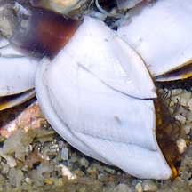
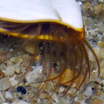

|
|
| barnacles text index | photo index |
| Phylum Arthropoda > Subphylum Crustacea > Class Cirripedia |
| Goose
barnacle Lepas sp.* Family Lepadidae updated Mar 2020 Where seen? Ocassionally, you might come across this stalked barnacle growing on objects that used to float in the open sea, such as large logs washed ashore. Goose barnacles usually die once they are stranded on the beach. Features: To about 2cm across. The outer shell is clam-like made up of five thin white plates. The opening may be red, orange or bright yellow. A leathery stalk attaches the animal to a hard surface. Unlike the more commonly seen shore barnacles, goose barnacles don't have an operculum to close the opening in their shells. Like other barnacles, feeds with its feathery feet. Some species of Goose barnacles can grow very large, with shells 5cm long and a stalk 20cm long! |
 Sisters Island, Jul 04 |
 Leathery stalk attaches the clam-like shell to a hard surface. |
 No operculum to seal the shell opening. |
*Species are difficult to positively identify without examination of internal parts.
On this website, they are grouped by external features for convenience of display.
| Goose barnacles on Singapore shores |
On wildsingapore
flickr
|
|
References
|